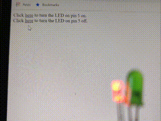
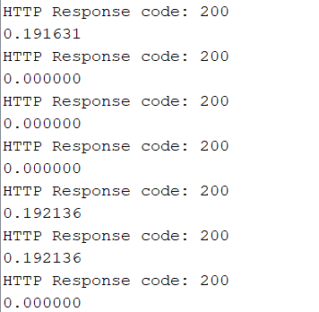
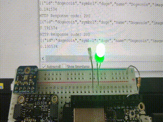
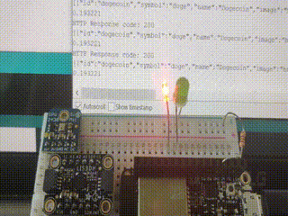

This week we worked on networking, and being able to communicate with microcontrollers through the local network (LAN) and the main net. For this project we used the ESP32 Feather board, which has wifi capability.

The first thing I did was work on getting the board to connect to the local network. After following the tutorial I was able to connect to the board from my computer, and turn an LED on and off. After that I slightly tweaked the code to activate a green LED when the red one is turned off, which would be necessary later on for the project I had planned. The LEDs being activated to switch colors are shown below.
For the main project this week I wanted to create a dogecoin price indicator. Similar to the scene from silicon valley, this device would show a green light when the price of dogecoin goes up and light up red when it goes down. In order to this we need to somehow fetch or scrape the price of dogecoin regularly. To do this I followed a tutorial online that showed how to scrape data from a website. After this, I tried connecting it to a few different online dogecoin price indicators, however I was running into issues with the reading, where the microcontroller wasnt able to pull up the website periodically, as seen in the screenshot on the right.
After running into a lot of issues with unreliably pulling up data from the website, I decided to use a price api that would provide a JSON of stats about the crypto in question, such as here for doge. To actually get the price, I found the position of "current_price" within the output string, and then created a substring after it which I converted to a float. I then compared the new price to the old one, and if they were different I would change the color of the LED (green if price went up, and red if price went down).
Below are gifs of the lights changing green when the price goes up, and light turning red when the price goes down.

